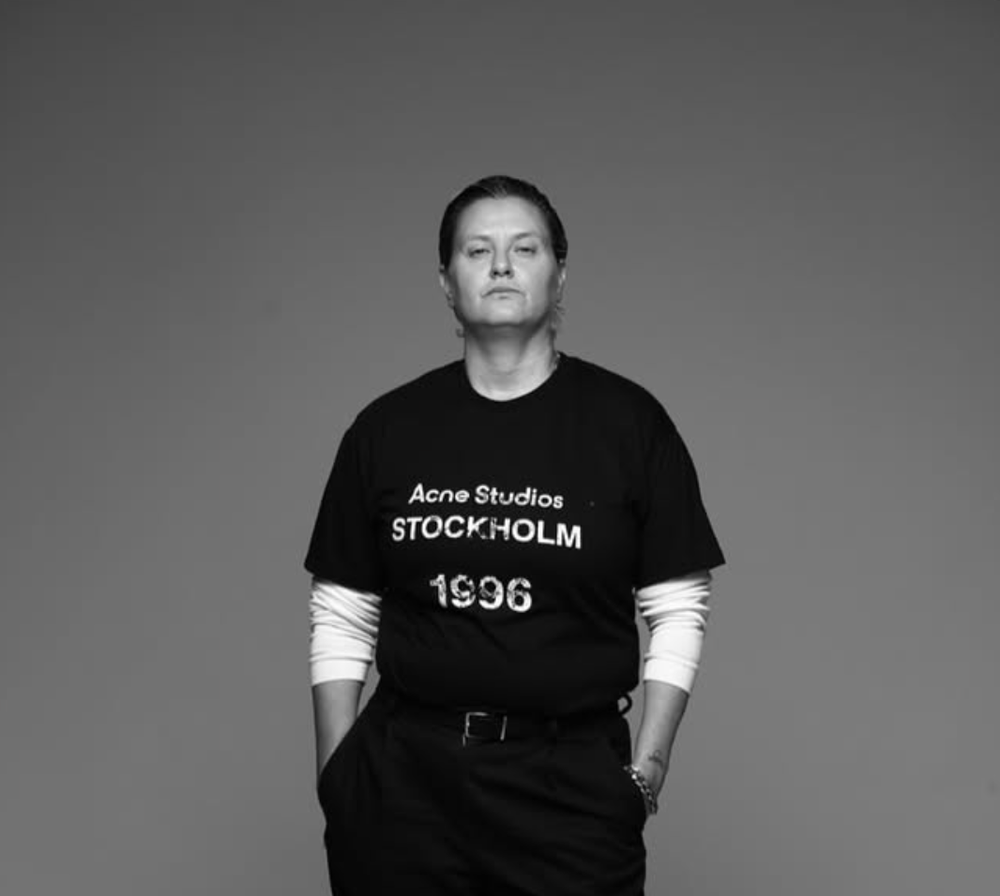

Energy
Recognize the force, rhythm and presence you naturally bring into the world.
004 · PÉOPLE ACADEMY · IDENTITY METHOD
ENERGY · EMOTION.
THOUGHT · BEHAVIOR.
ONE PRECISE COLOR.
WHY COLOR
Every person is a unique combination of energy, emotion, thought, behavior and cognitive ability.
Using a unique questionnaire built on four depth theories, we identify how you communicate, what drives you and how you think, feel and act—then distill it into one precise color.
003 · THE PIC METHOD
The PÉOPLE Identity Color method maps human identity through behavioral data, thinking abilities, emotional control and personality traits.
WHAT YOU’LL LEARN
A precise identity method that connects your communication, values, thought, emotion and action.
Recognize the force, rhythm and presence you naturally bring into the world.
Identify the communication style through which people understand and connect with you.
Distill the values that drive your decisions, relationships and creative direction.
Understand the cognitive patterns shaping how you process information and make choices.
Reveal the abilities, emotional control and character traits behind your area of genius.
Bring the full analysis together into one precise color that tells your story.
WHO IT’S FOR
The method is for people ready to understand their strengths, communication and natural way of moving through the world.
PEOPLE SEEKING A CLEARER SELF-IMAGE
CREATORS DEFINING THEIR NATURAL LANGUAGE
FOUNDERS ALIGNING IDENTITY AND ACTION
TEAMS SEEKING STRONGER COMMUNICATION
ANYONE READY TO DISCOVER THEIR AREA OF GENIUS

YOUR GUIDE
Zipi Romano developed the PIC method to identify human strengths through behavioral data, thinking abilities, emotional control and personality traits.
The nine Identity Colors translate complex human patterns into a clear language for self-knowledge, communication and growth.
PIC METHOD · 9 COLORS · 3 THINKING GROUPSDISCOVER YOUR COLOR
Leave your details and we’ll send you information about the identity lecture and PÉOPLE Colors Method.